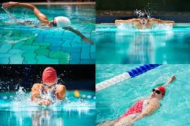

Hi all,
My name is Noah, I work for Safaricom PLC as a Quality Assurance Specialist within the Call Centre.
From my day to day duties am charged with taking care of Experience Assurance systems within the Customer Experience Division. This Entails coming up with new and better tools for the team to make it easy for them to work and also keep customer data safe. These need motivated me to apply and joining the Safaricom Digital Academy so as to learn more on automation and cloud computing which will help me come up with better systems ideas and more effective tools of work. My interests in computers, systems and cloud is another motivation factor to join the Academy and learn more for personal growth.
Where do i start.. 
Learning how to become a programmer will teach me the even a few simple lines of code can do so much to make life easier for me. If something will only work when a few buttons are pushed, program my smartphone to do it with one tap.
When I begin to learn how to program, I wlil begin to see all problems in the light of their solutions and my brain begins to function in that way.
This is probably one of the very best reasons to become a computer programmer – there are so many jobs available to me. The world is turning digital, we are increasingly becoming more reliant as a society on technology and as a result, there are more and more computer programming jobs to choose from and this will not change in the foreseeable future.
When I can think like a computer programmer does, I will start relating that to my real life. Most people will not be able to see the connection, let alone understand it but I will, when I start learning to program.